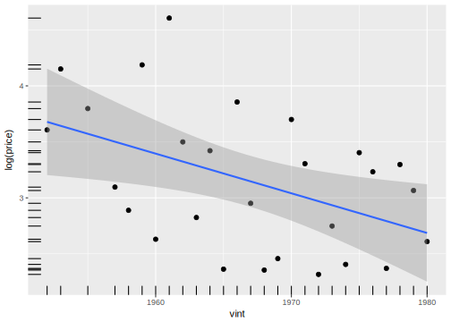
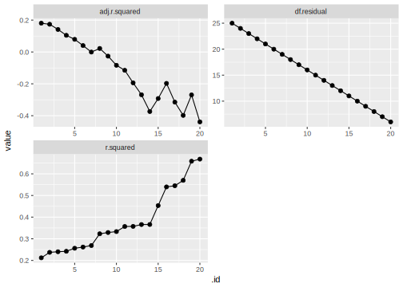
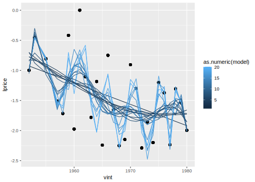

Chapter 7 Cross-Validation
Prerequisites
library("tidyverse")
library("broom")
library("modelr")
library("purrr")
library("stringr")7.1 Example: Predicting Bordeaux Wine
The bordeaux dataset contains the prices of vintages of Bordeaux wines sold at auction in
New York, as well as the the weather and rainfall for the years of the wine.
AshenfelterAshemoreLalonde1995a uses this data was used to show that the quality of a wine vintage, as measured by its price, can largely be predicted by a small number of variables.
At the time, these prediction were not taken kindly by wine connoisseurs.[^wine]
bordeaux <- datums::bordeaux %>%
mutate(lprice = log(price / 100)) %>%
filter(!is.na(price))The data contains 27 prices of Bordeaux wines sold at auction in New York in 1993 for vintages from 1952 to 1980; the years 1952 and 1954 were excluded because they were rarely sold. Prices are measured as an index where 100 is the price of the 1961.
The dataset also includes three predictors of the price of each vintage:
time_sv: Time since the vintage, where 0 is 1983.wrain: Winter (October–March) rainhrain: Harvest (August–September) raindegrees: Average temperature in degrees centigrade from April to September in the vintage year.
The first variable to consider is the age of the vintage and the price:
ggplot(filter(bordeaux, !is.na(price), !is.na(vint)),
aes(y = log(price), x = vint)) +
geom_point() +
geom_rug() +
geom_smooth(method = "lm")
Ashenfelter, Ashmore, and Lalonde (1995) run two models. All models were estimated using OLS with log-price as the outcome variable. The predictors in the models were:
- vintage age
- vintage age, winter rain, harvest rain
We’ll start by considering these models. Since we are running several models, we’ll define the model formulas in a list
mods_f <- list(lprice ~ time_sv,
lprice ~ time_sv + wrain + hrain + degrees)Run each model and store the results in a data frame as list column of lm objects:
mods_res <- tibble(
model = seq_along(mods_f),
formula = map_chr(mods_f, deparse),
mod = map(mods_f, ~ lm(.x, data = bordeaux))
)
mods_res## # A tibble: 2 x 3
## model formula mod
## <int> <chr> <list>
## 1 1 lprice ~ time_sv <S3: lm>
## 2 2 lprice ~ time_sv + wrain + hrain + degrees <S3: lm>Now that we have these models, extract the coefficients into a data frame with the broom function tidy:
mods_coefs <- mods_res %>%
# Add column with the results of tidy for each model
# conf.int = TRUE adds confidence intervals to the data
mutate(tidy = map(mod, tidy, conf.int = TRUE)) %>%
# use unnest() to expand the data frame to one row for each row in the tidy
# elements
unnest(tidy, .drop = TRUE)
glimpse(mods_coefs)## Observations: 7
## Variables: 9
## $ model <int> 1, 1, 2, 2, 2, 2, 2
## $ formula <chr> "lprice ~ time_sv", "lprice ~ time_sv", "lprice ~ ti...
## $ term <chr> "(Intercept)", "time_sv", "(Intercept)", "time_sv", ...
## $ estimate <dbl> -2.025199170, 0.035429560, -12.145333577, 0.02384741...
## $ std.error <dbl> 0.2472286519, 0.0136624941, 1.6881026571, 0.00716671...
## $ statistic <dbl> -8.191604, 2.593199, -7.194665, 3.327521, 2.420525, ...
## $ p.value <dbl> 1.522111e-08, 1.566635e-02, 3.278791e-07, 3.055739e-...
## $ conf.low <dbl> -2.534376e+00, 7.291126e-03, -1.564624e+01, 8.984546...
## $ conf.high <dbl> -1.516022230, 0.063567993, -8.644422940, 0.038710280...walk(mods_res$mod, ~ print(summary(.x)))##
## Call:
## lm(formula = .x, data = bordeaux)
##
## Residuals:
## Min 1Q Median 3Q Max
## -0.8545 -0.4788 -0.0718 0.4562 1.2457
##
## Coefficients:
## Estimate Std. Error t value Pr(>|t|)
## (Intercept) -2.02520 0.24723 -8.192 1.52e-08 ***
## time_sv 0.03543 0.01366 2.593 0.0157 *
## ---
## Signif. codes: 0 '***' 0.001 '**' 0.01 '*' 0.05 '.' 0.1 ' ' 1
##
## Residual standard error: 0.5745 on 25 degrees of freedom
## Multiple R-squared: 0.212, Adjusted R-squared: 0.1804
## F-statistic: 6.725 on 1 and 25 DF, p-value: 0.01567
##
##
## Call:
## lm(formula = .x, data = bordeaux)
##
## Residuals:
## Min 1Q Median 3Q Max
## -0.46027 -0.23864 0.01347 0.18600 0.53446
##
## Coefficients:
## Estimate Std. Error t value Pr(>|t|)
## (Intercept) -1.215e+01 1.688e+00 -7.195 3.28e-07 ***
## time_sv 2.385e-02 7.167e-03 3.328 0.00306 **
## wrain 1.167e-03 4.820e-04 2.421 0.02420 *
## hrain -3.861e-03 8.075e-04 -4.781 8.97e-05 ***
## degrees 6.164e-01 9.518e-02 6.476 1.63e-06 ***
## ---
## Signif. codes: 0 '***' 0.001 '**' 0.01 '*' 0.05 '.' 0.1 ' ' 1
##
## Residual standard error: 0.2865 on 22 degrees of freedom
## Multiple R-squared: 0.8275, Adjusted R-squared: 0.7962
## F-statistic: 26.39 on 4 and 22 DF, p-value: 4.058e-08Likewise, extract model statistics such as, \(R^2\), adjusted \(R^2\), and \(\hat{\sigma}\):
mods_glance <-
mutate(mods_res, .x = map(mod, glance)) %>%
unnest(.x, .drop = TRUE)
mods_glance %>%
select(formula, r.squared, adj.r.squared, sigma)## # A tibble: 2 x 4
## formula r.squared adj.r.squared sigma
## <chr> <dbl> <dbl> <dbl>
## 1 lprice ~ time_sv 0.212 0.180 0.574
## 2 lprice ~ time_sv + wrain + hrain + degrees 0.828 0.796 0.2877.2 Cross Validation
k <- 20
f <- map(seq_len(k),
~ as.formula(str_c("lprice ~ poly(time_sv, ", .x, ")")))
names(f) <- seq_len(k)mods_overfit <- map(f, ~ lm(.x, data = bordeaux))
fits <- map_df(mods_overfit, glance, .id = ".id")fits %>%
select(.id, r.squared, adj.r.squared, df.residual) %>%
gather(stat, value, -.id) %>%
mutate(.id = as.integer(.id)) %>%
ggplot(aes(x = .id, y = value)) +
geom_point() +
geom_line() +
facet_wrap(~ stat, ncol = 2, scales = "free")
The larger the polynomial, the more wiggly the line.
library("modelr")
invoke(gather_predictions, .x = c(list(data = bordeaux), mods_overfit)) %>%
ggplot(aes(x = vint)) +
geom_point(aes(y = lprice)) +
geom_line(aes(y = pred, group = model, colour = as.numeric(model))) Intuitively it seems that as we increase the flexibility of the model by increasing the number of variables the model is overfitting the data, but what does it actually mean to overfit? If we use \(R^2\) as the “measure of fit”, more variables always leads to better fit. Adjusted \(R^2\) does not increase, because the decrease in errors is offset by the increase in the degrees of freedom. However, there is little justification for the specific formula of \(R^2\).
The problem with over-fitting is that the model starts to fit peculiarities of the sample (errors) rather than the true model. Since we never know the true model, all we can check is if the model predicts new data.
7.3 Out-of-Sample Error
To compare predictive models, we want to compare how well they predicts (duh). This means estimating how well it will work on new data. The problem with this is that new data is just that, …, new.
The trick is to reuse the sample data to get an estimate of how well the model will work on new data. This is done by fitting the model on a subset of the data, and predicting another subset of the data which was not used to fit the model; often this is done repeatedly. There are a variety of ways to do this, depending on the nature of the data and the predictive task. However, they all implicitly assume that the sample of data that was used to fit the model is representative of future data.
many_mods <- list(
lprice ~ time_sv,
lprice ~ wrain,
lprice ~ hrain,
lprice ~ degrees,
lprice ~ wrain + hrain + degrees,
lprice ~ time_sv + wrain + hrain + degrees,
lprice ~ time_sv + wrain * hrain * degrees,
lprice ~ time_sv * (wrain + hrain + degrees),
lprice ~ time_sv * wrain * hrain * degrees
)7.3.1 Held-out data
A common rule of thumb is to use 70% of the data for training, and 30% of the data for testing.
In this case, let’s partition the data to use the first 70% of the observations as training data, and the remaining 30% of the data as testing.
n_test <- round(0.3 * nrow(bordeaux))
n_train <- nrow(bordeaux) - n_test
mod_train <- lm(lprice ~ time_sv + wrain + hrain + degrees,
data = head(bordeaux, n_train))
mod_train##
## Call:
## lm(formula = lprice ~ time_sv + wrain + hrain + degrees, data = head(bordeaux,
## n_train))
##
## Coefficients:
## (Intercept) time_sv wrain hrain degrees
## -1.080e+01 1.999e-02 9.712e-04 -4.461e-03 5.533e-01# in-sample RMSE
sqrt(mean(mod_train$residuals ^ 2))## [1] 0.2280059The out-of-sample RMSE is higher than the in-sample RMSE.
outsample <- augment(mod_train, newdata = tail(bordeaux, n_test))
sqrt(mean( (outsample$lprice - outsample$.fitted) ^ 2))## [1] 0.351573This is common, but not necessarily the case. But note that this value is highly dependent on the subset of data used for testing. In some sense, we may choose as model that “overfits” the testing data.
7.3.2 k-fold Cross-validation
A more robust approach is to repeat this training/testing split multiple times.
The most common approach is to to partition the data into k-folds, and use each fold once as the testing subset, where the model is fit on the other \(k - 1\) folds.
A common rule of thumb is to use 5 to 10 folds.
cv <- modelr::crossv_kfold(bordeaux, k = 10)
cv_rmse <- function(f, cv) {
fits <- map(cv$train, ~ lm(f, data = .x, model = FALSE))
}7.3.3 Leave-one-Out Cross-Validation
Leave-one-out cross validation estimates is a \(k\)-fold cross-validation with folds equal to the number of observations. The model is fit \(n\) times, leaving training the model on \(n - 1\) observations and predicted the remaining observation.
cv <- modelr::crossv_kfold(bordeaux, k = nrow(bordeaux))7.4 Approximations
For some models, notably linear regression, analytical approximations to the expected out of sample error can be made. Each of these approximations will make some slightly different assumptions to plug in some unknown values.
In linear regression, the LOO-CV MSE can be calculated analytically, and without simulation. It is (ISLR, p. 180): \[ \text{LOO-CV} = \frac{1}{n} \sum_{i = 1}^n {\left(\frac{y_i - \hat{y}_i}{1 - h_i} \right)}^2 = \frac{1}{n} \sum_{i = 1}^n {\left(\frac{\hat{\epsilon}_i}{1 - h_i} \right)}^2 = \frac{1}{n} \times \text{PRESS} \] where PRESS is the predictive residual sum of squares, and \(h_i\) is the hat-value of observation \(i\) (Fox 2016, 270, 289), \[ h_i = \Mat{X}(\Mat{X}' \Mat{X})^{-1} \Mat{X}' \]
loocv <- function(x) {
mean( (residuals(x) / (1 - hatvalues(x))) ^ 2)
}An alternative approximation of the expected out-of-sample error is the generalized cross-validation criterion (GCV) is (Fox 2016), \[ \text{GCV} = \frac{n \times RSS}{df_{res}^2} = \frac{n \sum \hat{\epsilon}^2}{(n - k - 1)^2} \]
gcv <- function(x) {
err <- residuals(x)
rss <- sum(err ^ 2)
length(err) * rss / (x[["df.residual"]] ^ 2)
}Other measures that are also equivalent to some form of an estimate of the out-of-sample error are the AIC and BIC.
References
Fox, John. 2016. Applied Regression Analysis & Generalized Linear Models. 3rd ed. Sage.